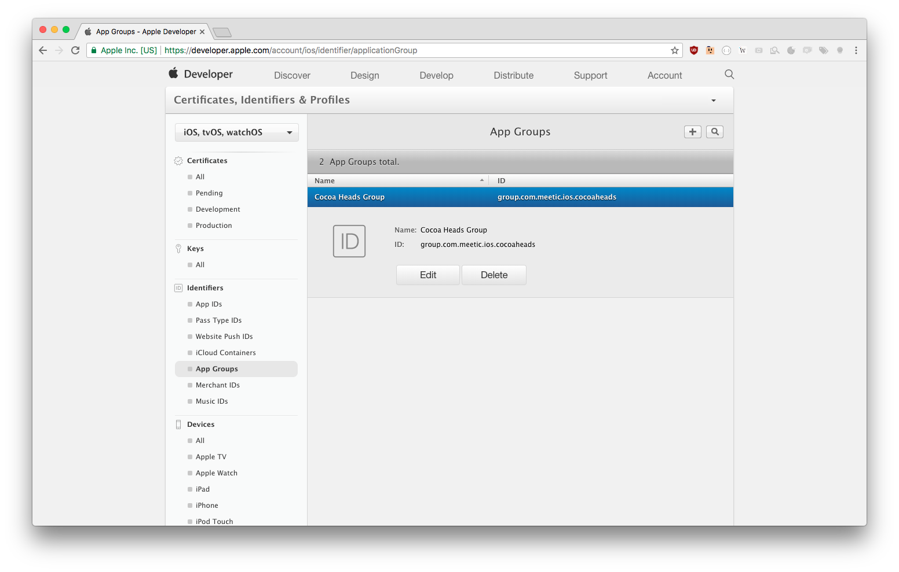
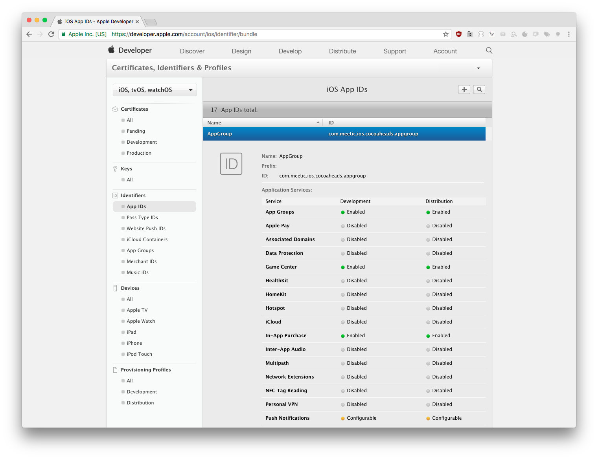
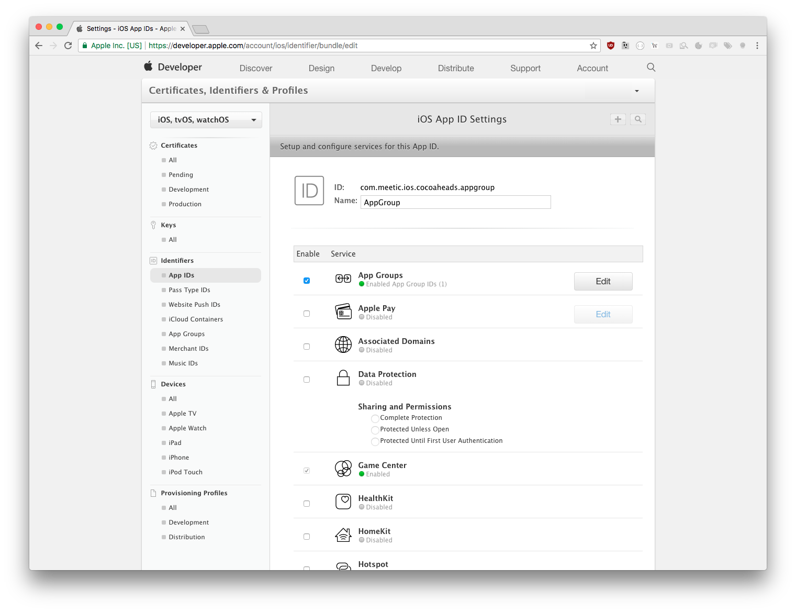

highlightStyle: dracula class: inverse middle # iOS App Groups for Debugging ## Avez-vous déjà livré votre menu debug en Prod ? Nous oui, et nous avons trouvé une solution originale basée sur les App Groups pour que cela n'arrive plus jamais. --- class: middle # Agenda 1. Qu'est-ce que c'est ? 2. Démo 2. Configurer votre projet 4. L'utiliser 5. Questions --- class: middle # App Groups: Qu’est ce que c’est ? App Groups are the scheme iOS uses to allow different apps to share data. If the apps have the right entitlements and proper provisioning, they can access a shared directory outside of their normal iOS sandbox. Sandboxing still applies except for a single exception. .footnote[Source: http://www.atomicbird.com/blog/sharing-with-app-extensions] --- class: middle # App Groups: A quoi ça sert ? Partager des données entre applications du même `App Group` en utilisant : - Keychain - Préférences: `UserDefaults` - Fichiers: `FileManager` - HTTPCookies: `HTTPCookieStorage` --- class: middle # App Groups: Chez Meetic ## En production Partager le Keychain aux extensions ## Pour le debug - Changement d’URL serveur - Feature Flipping - Logging - Langue de l’application sans changer la langue du téléphone via `AppleLanguages` - Récupérer le push token - Supprimer le cache - … --- class: inverse center middle # Démo --- class: middle # Autres idées - Récupérer un user id, le numéro de version - Changer des `UserDefaults` spécifiques - Ouvrir l’application principale via `DeepLink` --- class: inverse center middle # Configurer votre projet --- class: middle # Enregister un App Group 1/2 <img src="img/register1.png" width="90%"></img> --- class: middle # Enregister un App Group 2/2 </img> --- class: middle # Ajouter aux Entitlements 1/2 </img> --- class: middle # Ajouter aux Entitlements 2/2 </img> --- class: middle # Utiliser - UserDefaults ```Swift let userDefaults = UserDefaults(suiteName: "group.com.meetic.ios.cocoaheads") userDefaults?.bool(forKey: "SharedKey") ``` --- class: middle # Utiliser - FileManager ```Swift let fileManager = FileManager.default let containerURL = fileManager.containerURL(forSecurityApplicationGroupIdentifier: "group.com.meetic.ios.cocoaheads") if let fileURL = containerURL?.appendingPathComponent("file.txt", isDirectory: false) { if let fileHandle = try? FileHandle(forWritingTo: fileURL) { if let data = "Hello World!".data(using: .utf8) { fileHandle.write(data) } fileHandle.closeFile() } } ``` --- class: middle # ⚠️ Important à savoir Le conteneur partagé n’est pas supprimé si il reste encore une application installée appartenant à l’App Group Les applications doivent être signées avec le même provisionning profile --- class: inverse middle center # Questions --- class: middle # Projet d’exemple & Slides https://github.com/Valgrin/AppGroups </img>